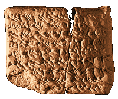

Daily diary
Daily diaries are records of astronomical observations and important natural events which took place on earth. Scribes made their observations and recorded them on clay tablets like this for each day of the year.

Click on the tablet to discover what it describes.
|